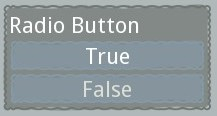
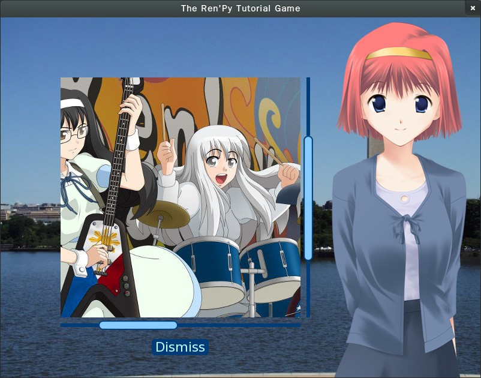
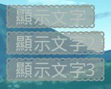
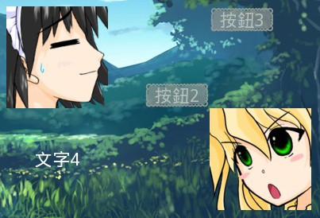
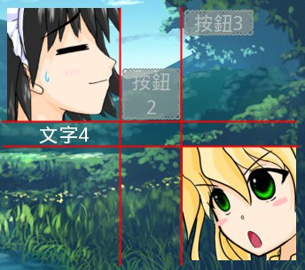
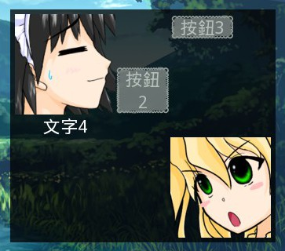
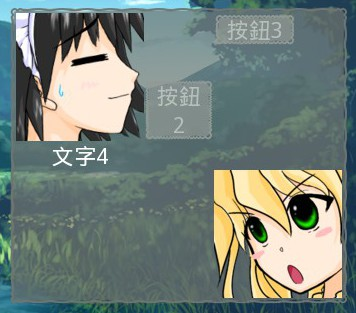

也紀念我們永遠的朋友 李士傑先生（Shih-Chieh Ilya Li）。
《雪凡與好朋友們的 Ren'Py 遊戲引擎初學心得提示》第九回：變數管理與 Screen 系統
各位觀眾大家好，歡迎大家欣賞本回的 Ren'Py 心得提示！
本回的主題分為兩大部份。首先是 Ren'Py 的存取檔特性剖析，其次則是非常重要，但對初學者稍微複雜難解的 Screen 系統。
在這之中，存取檔系統涉及了大量變數管理方面的問題，如果您需要在遊戲中處理成百上千的變數，您會在此處得到詳細的說明。另一方面，Screen 面板系統則可與使用者互動，同時顯示各式各樣的資料 。
在小遊戲中，您未必會用到這兩樣特性；但在一款足以被稱之為大型的複雜遊戲中，他們都是不可或缺的必備知識。
順便一提，因為本日稿擠之故，好朋友們的戲份暫時編不進來……這並不是因為咱最近意識到自己形象出了差錯，想以認真推眼鏡的態度，恢復吐嘈役身份那種無聊理由的關係。還請不要誤會。
進軍 Ren'Py 大型遊戲的基本知識，這就來讓我們聊一會兒吧！魔鬼藏在細節裡哦！
變數與儲存
本節目早先曾經提過，有些變數會儲存，有些變數則不會儲存。那麼究竟有哪些東西不會被儲存呢？而會儲存的東西又是怎麼被儲存的？和製作遊戲有什麼關係？
……本章就來深入剖析這一部份！
State 的概念
Ren'Py 的變數儲存機制是依賴於一種叫作 State （狀態）的概念來達成的。
您可以將 State 想像成整個遊戲中「所有變數當前狀態的集合」，如下：
- State A 包含以下變數與內容：
- STR = 25
- INT = 75
- CLASS = "有潛力的學生"
- State B 包含以下變數與內容：
- STR = 25
- INT = 75
- CLASS = "魔法少女"
- SAN = 5
在不同的 State 之間，有些變數內容會改變，而有些變數會消失或新增。
當遊戲變更了 State－－比方說從上例的 State B 變更為 State A－－這也就等於是變更了遊戲的當前執行進度，透過這種方式，Ren'Py 可以很直覺地完成儲存讀取，乃至於執行「回滾 (Rollback) 到先前對話」等操作。
事實上，State 又可被分為 Internal State 與 User State。
Internal State 是供 Ren'Py 引擎內部運用的。其中紀錄了當前遊戲進行時間、當前執行的語句為哪一句、螢幕上的圖層或圖片有哪些，而又被放在哪裡等等。以上這些東西的狀態，想當然爾也需要被儲存起來，不能忘記。
但 Internal State 的儲存是全自動的，會被遊戲引擎自己處理好。我們遊戲製作者並不需要，也無法對 Internal State 做任何事情。
User State 才是我們需要關注的。本文中提到的 State 都是指 User State。
在 Ren'Py 中，每當變數改變時，變數的變化就會被記錄下來成為一個新的 State，這些 State 在遊戲進行的期間會愈積愈多變成一大堆－－比方說 State 1 ~ State 10000。儲存時，這些 State 紀錄會全部被寫入檔案，並在讀取時被全部讀出加以重用。
因為這種設計，Ren'Py 的回滾功能非常強大，不像其他多數引擎只是簡單顯示文字紀錄而已，而是真正回到遊戲中的上一個狀態。玩家甚至可以用回滾功能在分歧選擇之後反悔重選，而無需不停地存讀檔，只需簡單將滑鼠滾輪往上滾就可以了。
官方論壇有人一度還提出 Ren'Py 的回滾功能實在太過方便，以致玩家可能選了某選項後，看看情況不妙就快速回滾想要重新選擇。某些設計者覺得這是賴皮行為，應該要被阻止。官方後來也依此推出阻止回滾的功能，以滿足製作者們需求。
如果您想要啟用這類功能，請去參考 Blocking Rollback 或 Fixing Rollback 兩方面的說明。
不過我個人認為，需要回滾的玩家依然可以靠一般的存讀檔功能回到分歧點，這只是單純找玩家麻煩拖長遊戲時間而已。您可以自行判斷一下您的遊戲中是否真需要這種限制。
State 不會記錄數值的來源
State 系統有一個重要特性需要留意：它只會記錄「當前的數值」，而不會記錄「這個數值是怎麼來的」。換言之，即使變更了「計算結果的方法」，讀檔時現有的數值依然不會改變，而僅僅只會保持原值。
聽起來好像很難懂？看下方的例子就能了解了。
# 第一版
label start:
"準備實驗！"
$ status = "不錯"
"實驗品狀況看起來：[status]" # 顯示「實驗品狀況看起來：不錯」。在遊戲執行到此時，先存一個「存檔A」
然後程式改版為：
# 第二版
label start:
"準備實驗！"
$ status = "劣質品" # 改了這句。
"實驗品狀況看起來：[status]"
重新執行程式，將「存檔 A」讀檔讀出來。您會發現畫面上顯示的依然是「實驗品狀況看起來：不錯」這串文字。這表示讀取時，變數 status 內部依然是處於「不錯」的狀態，而不會因為您前面變換了 status 的設定方法（status = "劣質品"）而使數值改變。
您可以用滑鼠滾輪「後滾然後前滾」，數值這才會被更新為最新的值。這也暗示 Ren'Py 中後滾是讀取舊狀態，而前滾則是執行語句。這樣一來，多少能看出 Ren'Py 回滾系統的特徵了吧？
除了計算方式不會記錄以外，官方指出另外還有幾種東西也不會記錄，不過在我看來那些狀況很難碰到，因此大都無關緊要。想研究時可以參看這頁。
變數的建立訣竅
怎麼建立變數呢？這似乎很簡單，就……
$ HP = 10
或……
python:
HP = 10
不就設定好了嗎？
嘛啊，正如您所說，確實沒錯啦。不過當您打算面對更多變數……比方說您有三十個角色，每個角色都有 HP、MP 等大把屬性時，以上的簡單策略會把您的腳本搞得一團糟。那就彷彿在錢包裡塞了總值上千元的硬幣般，害您碰上麻煩。
一言以蔽之，想處理大量變數的時候，您會需要「命名空間」的支援。
不理解命名空間是啥鬼也沒關係，此處快速解釋一下。
簡單說來，命名空間是一種用來避免「命名衝突」的方法。
舉例來說，很多角色都有 HP。但如果僅僅只寫「HP」，電腦不就無法知道，您說的究竟是哪個角色的 HP 嗎？
$ HP = 10 # 誰的 HP？
這種時候，我們通常會將變數打包進某個命名空間中，透過這種手段將變數限制在該命名空間的下面：
$ Lancelot.HP = 10 # 顯然是指 Lancelot 這傢伙的 HP
這個命名空間下面，可能還會有諸如 MP、SP、LoveLovePoint（？）等各式各樣的資料。如此一來，變數命名時就不會與其他角色的數值衝突到。
「避免命名衝突」就是命名空間的最大功用！
命名空間必須蓄意建立後才能使用，因此天生帶有偵錯能力。而使用長變數則沒有這種好處。
$ Lancelot_HP = 10 # 雖然也可以不用命名空間而直接把變數名稱寫很長，但卻很容易出錯。 $ Lancelet_HP = 10 # 比方說，對於這行內容，程式不會提示您打錯字。 $ Lancelet.HP = 10 # 但採用命名空間的這行，程式會馬上指出 Lancelet 不存在，告訴您顯然有什麼東西弄錯了。
以下有兩種方式可以用來建立命名空間，請聽我介紹。
標準式命名空間建立法
「物件式命名空間」或「標準式命名空間」這些名詞是我自己發明的，官方並沒有這種說法。請別介意命名。
一般來說，Ren'Py 6.14 版（含）之後全新提供的「標準式命名空間」比較方便。除非您有特殊目的，否則直接用這種就行了。
請看下方的例子，您可以像這樣建立並使用一個命名空間：
# 在開始區段建立一個名叫 Lancelot 的命名空間
init python in Lancelot:
pass # 可以在此做一些初始化。但也可以不做任何初始化，簡單跳過。
# 遊戲開始
label start:
# 您可以直接使用這個命名空間內的變數，為各種變數設值
$ Lancelot.pilot = "Suzaku"
$ Lancelot.HP = 100
$ Lancelot.SP = 50
$ Lancelot.weapon = ["VARIS", "MVS"]
# 像用普通變數那樣，直接去使用命名空間中的變數
"我的名字是[Lancelot.pilot]！"
「標準式命名空間」的優勢，是可以在某些特定的狀況下，手動「進入」命名空間！
如下範例：
label start:
python in Lancelot: # 進入名叫 Lancelot 的命名空間……
pilot = "Suzaku" # 在命名空間中，不用多事替變數指定命名空間的名稱。
HP = HP + SP # 省了好多打字數！看起來也更清晰了。
"我的名字是[Lancelot.pilot]！"
在特定命名空間中，您不用囉唆地輸入全名－－這也是理所當然的！就好像您在班上大喊「座號 39 號是誰」時，別人絕不會認為您在問隔壁班或隔壁學校 39 號一樣。這在某些計算密集的場合中有其方便之處。
如果對 in 的用法還是不明白，官方在 changelog 中有一些說明，還請參考看看 。
用了命名空間之後，遊戲中就不會一堆沒頭沒腦不知道是誰的 HP 滿地滾了。當您要製作一些規模更大、資料量也更多的遊戲時，這會讓遊戲變得更強健更好管理。還能最大限度避免打錯字。命名空間大致都能自動幫您找出問題。
物件式命名空間建立法
除了前述的「標準式命名空間」外，您還可以用另一種手法建立許多獨立的命名空間：
$ Lancelot = store.object() # 用 store.object() 建立物件式命名空間。
# 如果沒有這行就直接設值給 Lancelot.xxx，則會出現錯誤訊息。
此種命名空間的建立法，咱稱之為「物件式」，因為它是用 python 物件模擬出一個命名空間。在 Ren'Py 6.13 版之前（含），這也是唯一一種命名空間的啟用方式。早期版本使用者請注意這點。
同標準式命名空間那般，您可以透過「命名空間名稱」與點號 (.) 來精確指出變數：
label start:
# 以下這些變數都能被正常使用，也能正確地被儲存系統收錄
# 用法沒啥不一樣，只是非得要輸入全名而已
python:
Lancelot.pilot = "Suzaku"
Lancelot.HP = 100
Lancelot.SP = 50
Lancelot.weapon = ["VARIS", "MVS"]
"我的名字是[Lancelot.pilot]！"
但請特別注意！物件式命名空間不支援 python in XXX 語法！
請看以下範例：
label start:
"開始實驗囉，請保持好心情～"
$ somebody = object() # 指定 somebody 為一個物件型命名空間
$ somebody.emotion = 'x_x'
python in somebody: # 嘗試運用標準型命名空間專用的方式來修改它……
emotion = '^_^' # Ren'Py 不會提示您做錯任何事情
"您的心情是「[somebody.emotion]」" # 警告－－此處的結果絕非您想要的！！
結果為：
您的心情是「x_x」
過程中您不會得到藍白錯誤畫面，只會在最後得到一個不仔細看很難發現的錯誤結果，因此絕對不要混用兩種方法！絕對！
如果您對「物件式命名空間」進行深入測試的話，可能會發現除了 store.object() 以外，object() 與 renpy.store.object() 也都代表了相同的意思。
label start:
$ t1 = object()
$ t2 = store.object()
$ t3 = renpy.store.object()
以上三個命名空間 t1、t2、t3 都可以正確工作無誤，而事實上他們的意思也的確都是相等的：變數 t1、t2、t3 都會成為一個 renpy.python.RevertableObject 類型的物件。
也就是說 renpy.store.object() 是全名，而其他的名稱則都是別名。
更有甚者您還能發現，被變數也可以依此種命名方式設定或取回使用。
label start:
$ count = 5
baka "這是……蘿妲之果？居然一次拿到[store.count]顆！" # 5 顆。
$ fruit = object()
$ fruit.name = "蘋果"
friend "只是普通的[renpy.store.fruit.name]而已吧！" # 蘋果
有經驗的電腦玩家應該已經看出來了－－Ren'Py 的主程式其實本身就是跑在名叫 renpy.store 的命名空間中，而所有我們自訂的遊戲變數，預設也都是被存放在這個空間裡。
透過自定義類別 (class) 來控制物件式命名空間
從上面的介紹看起來，自從 6.14 版以後，標準式命名空間顯然更適合用來收藏變數。
不過之所以刻意介紹物件式命名空間，是因為這種命名空間的本質是物件－－換言之，您可以用自訂類別 (class) 的方式來引導命名空間做一些特別的事情。像是進行一些限制或自動化什麼的。
以下是個限制變數名稱的範例：
init python:
# 自行定義一個叫作 Someone 的類別，用來存放角色的內部資料。
# 注意 class 一定要繼承自「store.object」，否則內部資料不會被儲存。
class Someone(store.object):
# 這個類別的特徵是「您只能設定某些變數名稱」，此處指示本類別只能設定 name、race、description 三種東西。
# 如此一來可以有效避免打錯字。
# 比方說失手把 name 打成 mame 時，一旦腳本執行到此處就會立刻報錯，而不會就默不作聲地執行過去。
acceptable_attribute = {'name', 'description', 'race'}
def __setattr__(self, name, value):
if name not in type(self).acceptable_attribute:
raise Exception('Not allow this variable')
super(store.object, self).__setattr__(name, value)
# 實際使用看看
label start:
$ baka = Someone()
# 試著設定各種數值
$ baka.name = '⑨'
$ baka.race = '妖精'
$ baka.description = '⑨應該不需要解釋'
$ baka.excuse = '那個⑨是怎樣！我才不……' # 這行會提示錯誤，因為 "excuse" 並不包括在可設定的變數之中……Resistance is futile.
因為這種可以被用來自訂的特質，所以物件式命名空間在某種意義上其實更具彈性。當然，如果您用不到自訂 class 的功能，用標準型命名空間也是完全足夠的。
如果您用一些自訂類別 (class) 的物件來存放變數，則這個變數「一定要繼承自 store.object」，否則內部變數的變化，並不會被 Ren'Py 的 state 系統處理，當然也就無法收錄進存檔中，因此完全不能用。
繼承 store.object 是最重要的事情。絕對不可以忘！
存檔的通用性
Ren'Py 的遊戲存檔在不同引擎版本間有可能會互不通用；官方有在文件中主動提到過這點，請各位改版時多加注意。
如果您有興趣繼續深入 Ren'Py 的儲存系統，官方對此有相當詳細的解說，請翻查這一頁。
Screen 系統
講到 Screen 系統，您必須要先明白「UI 元件」的概念。
UI 元件的 UI 是 User Interface 的簡稱，換言之 UI 元件也就是「使用者介面上所會用到的元件」。
何謂使用者介面上會用到的元件？這個稍微有點難定義，不過舉例倒是很容易。總之，您大可看看手邊的任一個軟體視窗，您應該能發現其中包括文字標籤、按鈕、複選框、輸入欄位、捲軸、滑棒、樹狀圖與圖片等等－－有許多構造相似，經常被各種軟體重複使用的小零件。這些小零件可展現軟體的內部資料，甚至可以和使用者互動來改變軟體行為。這些小元件就是 UI 元件。
一般軟體如此，Ren'Py 也不外如是。在 Ren'Py 中，您同樣能見到許多到處都能派上用場的小小 UI 零件，像是按鈕等；而每個 Screen 也就是「一群 UI 元件的在螢幕上的排列組合」。
Screen 與 UI 元件等名詞或許讓人迷惑，但它們在遊戲中幾乎無所不在。
舉例來說，您進入遊戲後很快就會看到遊戲的主選單畫面，主選單畫面的右下角預設有「開始遊戲」、「結束遊戲」等按鈕可按，那些按鈕是 UI 元件！而主選單畫面本身，也正是一個獨立的 Screen 畫面。
不光只是主選單而已。右鍵選單是 Screen、存檔介面是 Screen、離開遊戲前問您「是否確認」的畫面也是 Screen，甚至就連 menu 指令產生出的選項畫面（見第三回），又或是遊戲中總是喋喋不休從不停息的對話框……這些全是用 Screen 做的！
一旦理解了 Screen 的設計方法，您將有機會改變以上各種現有 Screen 的外觀與行為，在某種程度上對其做出擴充或刪減。而設計出全新 Screen 當然更不在話下。
Screen 的預設放置位置
設計上，Screen 應該全被放置在 game/screens.rpy 檔案裡面。接下來您定義自己全新的 Screen 時，最好也將定義內容放在這個檔案的尾部。
先放鬆心情，將這個檔案給打開看看……♬
……不要暈倒！現在不是暈倒的時候！現在暈倒還太早了！給我振作……
咳！……嘛啊……那個……不是啦！沒有那麼難啦！大概？
總之呢，有興趣的話，您可以先隨便翻翻這個檔案，看這些由官方製作的 Screen 大概都長成什麼樣，稍微體會一下就好。
在這些亂七八糟的程式碼中，各位觀眾應該不難注意到 screen "say"、screen "main_menu"、screen "save" 等關鍵字，您應該能猜出他們在暗示遊戲的哪些部份。在初步理解 Screen 之後，您大可重新執行遊戲，觀察那些 Screen 的程式碼與顯示內容間的關聯性，也是一種很好的學習。
目前來說，您看不懂 screens.rpy 檔案的內容這是完全正常的。以下就來解說吧～
如果您對咱的解說尚不滿意，有心進一步研究，還請參考官方的說明，見此。
Screen 的呼出條件
依據官方手冊的說明，Screen 可能因為以下四種原因被呼叫出來：
- 隱式呼叫：比方說讓 Ren'Py 顯示對話時，會自然叫出一個名叫 "say" 的 Screen，專門負責顯示對話框與對話內容。
- 自動呼叫：比方說啟動遊戲時，會自動秀出名叫 "main_menu" 的 Screen，這就是遊戲的封面主選單。
- 被現存的 UI 元件呼叫：「呼叫 Screen」這件事，有可能被當作一個行動 (action) 繫結到某些使用者操作上：如按螢幕上某個按鈕、按鍵盤的某個熱鍵等。此時可能呼叫出 Screen 來。
- 舉例而言，在遊戲中按右鍵，預設會叫出遊戲選單 (game_menu) 。
- 顯式呼叫：使用 "show screen" 指令，就會像顯示圖片那樣將 screen 直接顯示在螢幕上。
此處稍加提醒：Screen 總是會出現在其他圖片上。這是因為 Screen 使用的圖層和 show 圖用的圖層並不相同的緣故，設計 Screen 時還請注意這個特性。
關於 Ren'Py 中的圖層，第八回曾詳細解說過，對此感到困惑的觀眾可適度參考一下。
Screen 最初範例
以下用一個常見到爛的橋段作為範本，示範一個簡單的 Screen 可以被如何定義與運用。
雖然稍長了點，但內容很單純的：
# ================= 定義圖片與轉場特效 ===================
define blight = Fade(0.25, 0.5, 1.5, color = "#FFF") # 爆炸轉場特效，與 screen 無關
image bg = "bg.jpg" # 背景素材，與 screen 無關
# ================= screens.rpy ======================
# 以下是關於 screen 的定義
screen timer: # screen 定義在此，僅僅就只有四行而已。看起來有點複雜？等會兒再細講！
default time = 30
timer time action [Hide("timer"), Jump("gameover")]
add DynamicDisplayable(countdown, sec = time) align (0.5, 0.3) # DynamicDisplayable 在此
init python: # countdown 是 DynamicDisplayable 所使用的函式，第六章有提到這是怎麼定義的，以及幹什麼用。不重複。
def countdown(show_time, same_tag_show_time, sec):
remain_sec = sec - show_time
remain_text = Text('剩下 {:.1f} 秒'.format(remain_sec), size = 40)
return (remain_text, 0.1)
# ================= script.rpy =======================
# 以下是使用示範
label start:
scene bg
"我迅速打開箱子的最底層，扳過計時器"
show screen timer(time = 10) # 顯示出計時器 screen: "timer"
"炸彈爆炸只剩十秒！該死……要剪紅線還是黃線？"
menu:
"「看清楚就下手！但是時間……」"
"紅線！":
hide screen timer # 收掉計時器 screen: "timer"
jump gameover
"黃線！":
hide screen timer
jump gameover
"藍……疑！？":
"你猶豫了短短一息，將鐵剪放到藍線之間，深呼吸……"
hide screen timer
with dissolve
"喀擦"
"……冷汗流滿了全身，計時器終於停住了。"
return
label gameover:
with blight
"轟隆的巨響迴盪在城市中間。少女感覺到了什麼，偶然將視線望向遠方。"
"（全篇完）"
return
這段程式碼是完整的，您只要自行準備一個 bg.jpg 作為背景檔案放在 game 目錄下，然後用這段程式碼取代掉 script.rpy 檔案中全部內容，就能夠正確運行本範例。
Screen 的啟用與關閉
看過上面的範例，相信各位已經注意到了，召喚 Screen 的方法就是：
show screen 名稱 hide screen 名稱
乍看之下和 show 圖時所用指令完全一樣。但其實他們之間還是多少有點不同，這包括：
- show screen 不能像 show 那樣，在後方加上 at、with 語句。
- 但 with 語句可以作為獨立的語句而單獨存在，效果依然能套用上去。正如例子中的展示。
- show screen 語句可以加入「參數」－－關於這點我會在稍後加以說明。
用 show screen 呼喚出來的 Screen，是不會「阻塞」遊戲正常進行的。
這個意思是說，screen 只是顯示在螢幕上面，您繼續點滑鼠，故事還是能往下推進，screen 的存在並不會攔截正常遊戲腳本流程。
如果您就是需要一個阻塞效果，讓 screen 攔在玩家面前說：「等等！你得先把我搞定才能繼續去做別的，否則此路不通。」則您必須用 call screen 語句來取代 show screen 語句。如下：
call screen 名稱
您大可修改前述的爆炸範例來試試效果。
注意，您只能透過在 screen 中加入兩種 action："Jump" 和 "Return" 來讓玩家能脫離阻塞狀態。比方說：
screen some_screen:
textbuttom "脫離阻塞" action Return() at truecenter
label start:
call screen some_screen
"您必須脫離阻塞才能看到這一行。換句話說，您剛剛按過那個按鈕，執行過 action Return 了。"
當這兩種 action 的其中之一被運行時，故事才能繼續進行下去。
Screen 最初範例剖析
咱們來看看爆炸範例中的 screen 到底是啥意思：
screen timer:
default time = 30
timer time action [Hide("timer"), Jump("gameover")]
add DynamicDisplayable(countdown, sec = time) align (0.5, 0.3)
上述爆炸範例中的 Screen，就只是一個計時器，功能只有兩項，非常單純。
首先，它會在被呼喚（show screen 或 call screen）時開始倒數計時，並在倒數歸零時，將敘事線跳轉到 label "gameover" 的地方。其次，它還會在螢幕中央顯示一個大大的倒數計時數字，來提醒玩家還剩多少時間可用。
Screen 的參數與設值
第二行的 default time = 30 表示：time 這個參數預設值為 30。如果在 show screen 時忘了指定要倒數多久，則倒數的時限就會自動被設定為三十秒。建議您觀察一下上面四行中有哪些地方用到了 time 參數，來體會參數的用法。
咱們對照一下顯示 screen 時的指令是什麼：
show screen timer(time = 10)
括號中，變數 time 會被指定為 10……由於我並沒有偷懶或忘記給值，因此 time 在本例中事實上是被設為 10 的。
但如果我這樣寫……
show screen timer
這樣腳本也不會出錯，不過 time 沒有給定，就會從 30 秒處開始倒數。
您還可以在此設定別的變數，不過如果 screen 內部沒有用到這個變數，那就只是浪費時間而已：
show screen timer(emotion = 'XD') # 不會出錯，但也沒意義，因為 screen 內部沒有用到 "emotion" 這個參數
Screen 可以觸發行動
screen 的第三行定義了一個計時器 UI timer。
timer time action [Hide("timer"), Jump("gameover")]
此處注意一下，本行開頭處的 timer 是一個關鍵字，專指一種叫「計時器 (UI timer)」的 screen 元件，而 screen timer 的 timer 則是我自己隨意替這個 screen 取的名字，兩者完全不同切勿搞混。
本行定義的 timer 元件，與「在螢幕上顯示」這件事沒有關係，光靠這行是不會顯示出倒數數字的。這個計時器僅僅只供內部邏輯判斷使用。
當計時器倒數結束，關鍵字 action 後面的兩個行動：Hide("timer") 與 Jump("gameover") 就會被「依序」執行。這會先讓 screen timer 關掉自身，然後將故事跳轉到 label gameover，讓優柔寡斷的玩家品嘗苦果。
Screen 中有有很多元件，都能在特定條件下觸發所謂的「行動 (action)」－－好比說一顆按鈕按下去，會觸發某事，讓當前的遊戲起或大或小的變化。會產生某種行動與變化，在遊戲中是不可或缺的。
可以用在 Screen 中的元件數量不少，而 action 的種類也同樣繁多。從 Hide、Jump、Show、條件判斷、存取檔案、截圖、改變變數數值等等，您都能找到對應的 action 來使用。
您可以在此處查到 action 的完整列表。
在 Screen 中加入 Displayable
雖然有倒數計時功能了，但卻無法顯示出來，這樣實在太不像話。咱們就來看看顯示問題吧。
第四行透過 add 語句替 screen timer 加入了唯一一個會被顯示在螢幕上的元件。這是一個 DynamicDisplayable()。
add DynamicDisplayable(countdown, sec = time) align (0.5, 0.3)
有關 DynamicDisplayable() 為何物，還請參看早先第六回的說明。總之它可以把一個不斷倒數的數字顯示在螢幕上，這正是我們所需要的。
除此之外，以上腳本還把它移動到 align (0.5, 0.3) 的位置上：這部份的語法與 ATL 中的屬性設定語法相同，您可以加以自行參考設定。
在上例中，咱們將 Displayable 的顯示位置設定為 align (0.5, 0.3)。
但既然說到對齊 (align)，很顯然應該要有個對齊目標，不知道各位有沒有懷疑 screen 本身的位置又是在哪裡呢？
讓人有些意外地，Screen 並沒有「位置」或「大小」這種屬性。換言之，它並不存在長寬邊界。Displayable 後面的 align 屬性，對齊的不是包裹他們的 screen，而是遊戲的顯示區本身。
Screen 並沒有「位置」這種特性，因此在顯示圖片時我們常用的 at right、at left 語法，對它並不適用，您不可能寫出 show screen XXX at right 這種語句。此外移動系的 with 轉場如 "move"、"ease" 也同樣無法對 screen 發揮效果。
Screen 並不能像圖片那樣能移來移去，您可以簡單地想像它是全螢幕的。它只有顯示或否這兩種狀況。
定義一個 Screen
看過範例之後，您應該已經有些感覺了，這就逐項深入介紹。
要定義一個 Screen 非常簡單，就像下面這樣：
screen 名稱:
# 內容
唯一需要注意的只有 screen 必須要定義在 init block 內部。
Screen 的基本設定
一個 screen 內，可以有四種參數來設定它本身，這分別為 tag、zorder、modal 與 variant 四種。
含意與設定方式如下所示：
screen money_panel:
tag panel # tag
# 表示這個 screen 的 tag 為「panel」。
# tag 這種東西和圖片命名時的「第一字節」用途一樣。也就是說相同 tag 的 screen，一次最多只會出現一個，不會互相重疊。
zorder 1 # zorder
# 數字愈大離使用者螢幕愈近，在多個 screen 同時被呼出的場合，可判斷彼此的遮蓋順序。
modal False # modal
# 如果為 True，則叫出 screen 後就只有這個 screen 中的內容可以和使用者互動，其他的 UI 互動都會被鎖住，官網說明見 (https://www.renpy.org/doc/html/screens.html#screen-statement) 。
variant "pc" # variant
# variant（變體）可以用在「重複定義同一個名字的 screen」上面，設定出同樣 screen 的不同「變體」。
# 比方說您可以重複定義 money_panel 好幾次，每次都設為不同的 variant，而具有多個變體的 screen 在被呼叫時
# 會自動選擇最適合現況的設置，比方說在電腦上會優先顯示 variant "pc" 版本的變體，在手機上會選擇 variant "phone"
# 之類的。不過除非您打算撰寫跨手機平板與電腦的遊戲，平常您倒是無需理會這個東西。
大部份時候運用預設值就夠了，無需特別費事去設定它們，比方說先前爆炸範例中的 screen timer 就一項也沒設定，同樣能運作得很不錯。
modal 的說明，看起來看 call screen 的效果很相似，不過這兩者其實略有差異。
modal 並不會真正阻礙腳本運行，但是它會攔截幾乎所有的使用者輸入，將所有的使用者輸入轉給自己處理。因此玩家同樣也會發現滑鼠左鍵點了沒反應，遊戲進行不下去的情況。
您可在爆炸範例中加入 modal True 來研究一下效果，想想這功能可以怎麼用。
以上的 screen money_panel 中還沒有被放入任何的 UI 元素，因此這樣定義出來的 Screen 即使呼叫了也沒有任何東西會被顯示，什麼都不會做。
為了讓他們具體做點事，我們需要在 Screen 中加入 UI 元件。
User Interface 陳述句的基本語法
想「往 Screen 中填入 UI 元件」，得靠「UI (User Interface) 陳述句」。
單行與多行
UI 陳述句寫成多行或單行都可以。
以下用先前看過的，將 Displayable 加入 Screen 中的 add 陳述句為例，分別將其寫成……
單行版本：
screen timer:
add DynamicDisplayable(countdown, sec = time) xalign 0.5 yalign 0.3
多行版本：
screen timer:
add DynamicDisplayable(countdown, sec = time):
xalign 0.5 # 第一個屬性，請對照單行版本，看他們是怎麼被對應的。
yalign 0.3 # 第二個屬性
以上兩組腳本意思完全一樣。怎麼順眼就怎麼寫吧！
屬性與參數
不同的 UI 陳述句，會有不同的參數和屬性可供設定。
比方說前面見過的 timer 陳述句：
timer time action [Hide("timer"), Jump("gameover")]
其中 action 就是 timer 的某一項「屬性名稱」，而後面中括號範圍內的那一堆，則都是 action 的「屬性值」。
至於上面那行的 time 則是「參數」。
參數與屬性通常採用以下格式來輸入：
# 單行寫法
陳述句名 參數 屬性名 屬性值 屬性名 屬性值 …… # 中間每一項全部是用空白分開
# 多行寫法時，等同以下格式
陳述句名 參數:
屬性名 屬性值
屬性名 屬性值
....
有些 UI 陳述句沒有「參數」就不用硬寫，比方說 vbox 就可以直接寫成這樣……
vbox: # 這行沒有參數
....
還有些 UI 陳述句中還可以放入其他 UI 陳述句，同樣也以 vbox 舉例……
vbox:
textbutton "按鈕文字" action Jump("somewhere") # textbutton 是別的 UI 陳述句，可以在 vbox 中加入按鈕
vbox 與 textbutton 是啥等下就會講到，此處要請各位留意的是輸入格式！不要糾結細節啦！
常見的屬性
「參數」的意義在每個語句都互不相同，不過「屬性」在 UI 陳述句中，倒是經常能互通。
常常可在各種 UI 中見到的屬性包括：
at
對於可顯示的 UI 元件，可用 at 指定一個 transform 給它。
這通常是被用來指定位置。例如……
textbutton "按鈕文字" at center # 加入 at center 屬性，將按鈕放到正中間
action
可給與那些能夠觸發行動的元件，指定他們要觸發什麼行動。例如……
textbutton "按鈕文字" action Jump("somewhere") # textbutton 元件是按鈕，故這表示當滑鼠點擊時，跳到 somewhere 這個情節塊中
timer 30 action Jump("somewhere") # timer 是計時器，故這表示 30 秒後跳到 somewhere 這個情節塊中
很多 UI 元件都能觸發行動 (action)，稍候再說。
style 和 style_group
對於可顯示的元件，style 可用來設定當前這個元件的外貌；而 style_group 則同時適用於設定子元件的外貌。
style 系統相當難搞，細節等講 style 系統時再說。
UI 陳述句一覽
官方文件很爽朗地把陳述句的說明全部堆成一大堆，難懂度加倍。因此我自行獨斷地將陳述句分成幾個大類。如下所示……
- 佔位元件
- layout 元件
- 容器元件
- 其他元件
佔位元件
佔位元件是最基本的 UI 元件，不管功能是啥，他們總會佔據螢幕上的一塊空間……
絕大多數的 Screen 總是會大量運用這類 UI 元件來拼裝畫面。
label 和 text
▲ 圖1：text 與 label 的示意圖，兩者的預設樣式完全相同。上圖大小不同只因為我主動調整了 text 的字體大小。您稍候可以見到它的程式碼。
UI text 元件可在 screen 中的任意位置放置一個純文字字串，而且這個字串還完全支援第五回提過的各種文字格式化語法。
您可以替文字字串設定各種 Text style 來控制它的外觀，如顏色或大小等等；此外也可藉由設定 Position style 來控制它的顯示位置。
至於 label，它與 text 功能幾乎一樣，可在螢幕上顯示一段文字。如果您沒有手工設定它的樣式，label 的外觀看起來甚至與 text 完全相同。
兩者的差異包括以下幾點：
- 您不能直接對 label 設定文字大小等樣式（如 size 等），但 text 可以。
- 想替 label 自訂文字樣式，要在文字樣式名稱中加入 "text_" 前綴。關於這點稍候馬上會做出解釋。
- 您可以替 label 設定外框與背景，而 text 則做不到這點。
- 技術上來說，label 能夠設定外框與背景，那是因為 label 有在文字外側套上一層「window」。
- 關於 window 是啥咱們會在之後的「容器元件」類別中提到。
- label 的預設樣式為 style.label （用於 window 上，控制背景等）和 style.label_text（用於字上，控制字體大小顏色等），而 text 的預設樣式則直接套用 style.default 中與文字有關的部份。
沒錯，都是些非常微妙的差異……您會困惑我可以理解。但此時先別想太多，就先回頭看看示意圖吧。上圖是用以下兩條 UI 語句寫成的：（您得把他放在 screen XXX: 底下才能正常執行）
text "文字 (text) 就{b}長{color=#F00}這樣{/color}{/b}" align (0.1, 0.1) size 40
label "標籤 (label) 就{b}長{color=#F00}這樣{/color}{/b}" align (0.1, 0.2)
咱在這兩行中都加了 align 屬性，主要是為了將那兩個元素分開，以免重疊起來不好看，此外也是用 Position style 來示範如何控制顯示位置。
至於 text 後面的 size，則是一項 Text style 屬性，這將文字字體大小指定為 40，所以圖上的 text 文字才會變得比較大。
如果企圖用同樣手法操作 size 屬性、在 label 那行設定字體大小，則 Ren'Py 會立刻哭給您看，拒絕執行－－之前有提過，您得透過 "text_" 前綴才能操作 text style 屬性，也就是說您得寫成「text_size 40」才能搞定它。
我還趁機用了一點像是 {b} 之類的文字格式化語法，忘記的人請參見第五回。格式化語法很好用，可以時就儘量運用吧。
好啦，我知道這問題很讓您惱羞……
一般而言，您只有一種情況應該用 label，那就是在 frame 中製作「面板上的提示字」時。至於其他場合則應該儘量用 text 來解決問題。

▲ 圖2：所謂「面板上的提示字」位置的示意圖。其中 "Radio Button" 部份就是用 label 做的。至於框框與背景色則是 UI frame 造成的，與 label 無關，關於 frame 等會兒就會講到。
label 與 text 的預設外觀沒有差別，因此這種作法只是為了確保語意正確。語意正確可在未來自訂 label 或 text 的外觀時，不至於錯誤影響到另一邊。
textbutton 和 imagebutton
正如其名，這是用來產生按鈕的 UI 陳述句。兩者都會在螢幕上顯示出一個可供點擊，點了之後可以觸發某種行動 (action) 的塊狀空間。
textbutton 中只能放入文字，但用起來相當方便乾淨清爽，Ren'Py 中絕大部分的按鈕都是用這個做的。
textbutton "文字按鈕" action Return()
▲ 圖3：idle 狀態的文字按鈕。（當游標沒有碰觸按鈕時，按鈕會處在 idle 狀態）
▲ 圖4：hover 狀態的文字按鈕，比之 idle 稍微發亮。註：要是沒有給出 action 屬性的話，就算移上去也依然是 idle 狀態。
至於 imagebutton 則可以在按鈕中，放入圖片作為顯示之用。
但需特別注意的是，每個 imagebutton 都需要不只一張圖片……這麼說吧，一個平常閒在那 (idle) 時顯示的按鈕，與滑鼠游標移上去 (hover) 時的按鈕，顯示的圖片應該是互不相同的。
# 注意需用字串格式指定圖片名稱
# 此處是直接指定為檔名，但您也可以將其指定為一個 displayable。如使就可搭配各種複雜的 ATL 語句，創造動畫圖片效果。
imagebutton idle "button_idle.png" hover "button_hover.png" action Return() # 指定兩種不相同的圖片
▲ 圖5：idle 狀態的 imagebutton。因為某個笨蛋吵著要露臉，那就露露她的傻臉好了。注意 imagebutton 預設不含背景與外框，請於繪製按鈕時自行把該畫的東西都畫出來。
▲ 圖6：hover 狀態的 imagebutton。滑鼠游標一移上去，圖片就會瞬間變化（因此沒有漸變）。順便一提，它不會像文字按鈕那樣發亮，希望有特殊效果同樣還請自己動手畫。
很遺憾，我也試不出可用 imagebutton 達成漸變轉場的方法，不過或許您可以試試 UI button 搭配 ATL 看看。
其實 UI textbutton 與 UI imagebutton 都是由 UI button 所衍生出來的。因此如果您有比較特別的按鈕需求，也可以直接使用 UI button 來製作按鈕。UI button 可在螢幕上產生一個可點擊區域，但基本上不管顯示方面的事情，故用起來比較麻煩囉唆，然而如果會用的話，可以建立起構造非常繁複的華麗按鈕。
預設的儲存與讀取按鈕就是用 UI button 做的。程式碼範例請見 screens.rpy 中的 screen file_picker。
設定 imagebutton 時也可以用 auto 來減少打字量，如下：
imagebutton auto "button_%s.png" action Return()
其中 %s 會自動被代換為 idle 與 hover 等文字。故只要圖檔命名整齊，如此就能輕鬆定義多張圖片。
再次強調，要讓 imagebutton 正常運作，至少需要設定 idle 與 hover 兩種狀態圖片（但您可以將兩張圖片映射到同一張）。另一方面，除了 idle 與 hover 這兩種狀態外，預設也有一些比較罕用的狀態，完整列表可參看官網的說明，此處不囉唆。
add
您可以透過 "add"，在 Screen 中加入任意的 Displayable。
# 各種 Displayable 表示法都行，請參看第六回關於 Displayable 的賦值方法之介紹。
add Image("image.png")
add "圖名"
具體有哪些 displayable 可用，還請參看第六回～♪
bar 與 vbar
bar 與 vbar 可以用來產生水平與垂直向的滑棒。
▲ 圖7：bar 的示意圖。註：bar 和 vbar 除了顯示起來不一樣外完全相同，故此處單用 bar 來解釋。
最簡單的 bar 用法像下面這樣：
bar value 0.5 xmaximum 0.3
這會產生一個如上圖一樣的 bar。
以上是最最簡單的 bar 用法，但真要將 bar 用起來，這邊得先介紹一些注意事項：
- 滑棒愈靠近左方或下方，表示數字愈少。反之則數字愈大。
- 此為預設值，遊戲製作者也可以透過 style 系統來變更它。但此處先不講。
- 滑棒的「數字範圍」可以用 "range" 來定義。預設 range 為 1.0，這表示滑棒最左側是 0.0，最右側是 1.0。
- 舉例來說，如果 range 設為 100，則表示滑棒最左側為 0.0，最右側是 100。
- 滑棒的數字範圍可以設定偏移量 "offset"。
- 舉例來說 offset 設定為 10，range 設為 1.0，則表示滑棒的顯示範圍為 10.0 ~ 11.0。
- 滑棒的顯示長度，預設會儘可能填滿最大可用空間，因此通常會搭配 layout 元件使用。
- 如果不搭配容器直接用，也可用 "xmaximum" 或 "ymaximum" 來設定寬度與高度。
如上例所示，滑棒的 "value" 值可以是一個常數，但實際在用時我們基本上都不會這樣設值給它－－明明就是個滑棒，設成常數有什麼用啊！
最少也該設成變數啊，如下：
init:
define bar_value = 0.3
screen bar_test:
bar value bar_value
label start:
show screen bar_test
"最初的滑棒數值顯示在螢幕頂端了，數值是 0.3，因為預設 range 為 1.0，所以滑棒大約滑了 30% 長度。"
"然後來變更一下滑棒值……"
$ bar_value = 0.5
"好的，現在設為 0.5，滑棒也滑到一半的位置了。看到了嗎？"
但僅僅只是變數的話，依然難以滿足廣大人民百姓的要求。遊戲作者可能還想要更漂亮的效果－－不是讓條棒在螢幕上瞬間縮短變長，而是加入漸變動畫。
請將上例中的「bar value ...」那行改成像下面這樣：
bar value AnimatedValue(bar_value, delay = 0.5)
好了，您現在得到一個能夠漸變的條棒了。
不過條棒漂亮規漂亮，卻只能用來顯示而已。玩家拿滑鼠對滑棒拖拉點按，卻一點用兒都沒有……
嗯……或許您會想要一個能和玩家互動的條棒？讓玩家也能指定數值，而不僅僅只是顯示？
init:
define bar_value = 0.3
screen bar_test:
bar value VariableValue("bar_value", range = 1.0) # 關鍵同樣在這行
label start:
show screen bar_test
"最初的滑棒數值顯示在螢幕頂端了，數值是 0.3，因為預設 range 為 1.0，所以滑棒大約滑了 1/3 長。"
"然後來變更一下滑棒值……"
$ bar_value = 0.5 # 透過程式碼賦值同樣是可行的
"好的，現在設為 0.5，滑棒也滑到一半的位置了。"
"再來，請試著用滑鼠調整一下滑棒的長度，然後點擊讓遊戲繼續……"
"現在滑棒的數值是：[bar_value]"
現在您得到他了－－一個可以讀取使用者拖拉的條棒。
在最後兩個例子中，您都能看到 value 屬性被設定為某種特別的物件；這些物件很明顯賦予了條棒某種能力。其實 bar 還有一些別的 value 物件可以使用，他們各有各的特殊效果。因為細節太過囉唆，有需要就請您自行參看官網這邊了。
null 空佔位符
null 是一個什麼都不顯示的佔位符，單獨時派不上用場，但可以在排版元件中留出空白欄位。
可以指定留空範圍的寬 (width) 與高 (height)，這兩個屬性在某些 layout 中會有用。
其他顯示元件
Ren'Py 中還有一些不錯的元件，只是比較罕用。此處稍微提一下，各位有興趣再去研究就好。
- viewport：可在螢幕上建立一個子視窗，這個子視窗的「內容物」可以比子視窗本體還大。您可透過滑鼠拖曳、滑鼠滾輪、附加捲軸甚或是將游標移動到畫面邊緣，來平滑地捲動它。
- 官方範例遊戲 (tutorial) 中示範了如何建立附指示條的 viewport 區，以及如何用全螢幕的 viewport 建立地圖效果（游標移動到邊緣就會自動平移畫面）。其視覺效果非常棒，建議一定要去看看。這個示範被放在 tutorial 遊戲主選單的 User Interaction 中，至於程式碼則被放在 demo_ui.rpy 檔案的 viewport_screen 與 edgescroll_screen 兩個 screen 定義中。

▲ 圖8：直接拿官方 tutorial 的範例來看最清楚了，左邊那個小窗口就是 viewport。但還請注意那滑棒是用 bar 和 hbar 做的，viewport 本身其實不包含滑棒，然而只要一些很簡單的手續就能在他們兩者之間互相傳值，讓他們連動起來。請參看官方 tutorial 遊戲的示範程式碼吧！
- mousearea：可在畫面上訂出一個區域，但不做出任何顯示，然而當滑鼠移入或移出本區域時，將會自動觸發某些行動 (action)。因為本身不接受點擊，所以可以和按鈕類元件互相重疊使用。
- 可做出像是「滑鼠移到角落後，自動彈出工具列」這類功能。
- input：可在螢幕上建立一個可輸入文字的區域，當輸入完成按 enter 就會將值回傳。
- 據我私下測試，這個元件的輸入結果要搭配 call screen 語句來使用才能正確回傳。
layout 元件
layout 類元件可幫助其他 UI 元件完成排版，將多個 UI 元件整齊拼裝起來。
hbox
依序橫向排列所有子元素。
舉例來說：
hbox:
# 別忘記可以在此處加入像是 align (0.1, 0.1) 之類的屬性，來控制整個 hbox 相對於螢幕的位置。
textbutton "顯示文字"
textbutton "顯示文字2"
textbutton "顯示文字3"
▲ 圖9：hbox 示意圖，所有內部元件依照順序橫排。
vbox
依序縱向排列所有子元素，用法和 hbox 相同。將上例改為 vbox 則為……

▲ 圖10：vbox 示意圖，所有內部元件依照順序縱排。
在看官方的範例程式碼時您會發現，許多 layout 元件如 hbox，有時也會被寫成如下這樣：
has hbox # 注意這行！
# 下方不需縮進
textbutton "顯示文字"
textbutton "顯示文字2"
textbutton "顯示文字3"
這代表的意思和我們先前用「區塊方式」來寫是相同的。在官方主動為您寫好的 screens.rpy 中，您可以大量見到這種用法。
然而運用 has 語法有什麼優點呢？
這個問題，很遺憾我試不出來。根據咱的研究，has 語法的劣勢其實要鮮明得多……
- 首先，has 語法無法直觀呈現出階層結構，可能會造成不必要的混淆。
- 另外，has 語句只能出現在「window 類 UI 元件」（說明見後方章節）之下，也就是 UI frame 、UI window 等元件下方。使用限制比較多。
我原本認為 has 語句的優點在於「layout 元件不需明確成為 block 的標頭」，因此可以和流程控制語句 (if) 合併使用，方便動態地切換 layout 類別，如將 hbox 變更成 vbox 等等。如下：
# 注意這個範例無法運作
screen three_button:
default use_hbox = False
frame:
if use_hbox: # 動態切換 hbox 與 vbox 類型
has hbox
else:
has vbox
textbutton "顯示文字"
textbutton "顯示文字2"
textbutton "顯示文字3"
看起來漂亮，但別試了，以上語法是行不通的。
或許 has 語法只是時代的遺蹟也未可知，總之咱並不推荐您主動去使用它。能看懂就足夠了。
grid
grid 的排版元件的一種，可以將一個區域切割成「大小均等」的好幾塊方格。
使用時應該同時輸入 columns 與 rows 共兩個數字作為參數（如grid 3 2）。舉例如下……
grid 3 2:
add "Head_FileSystem_1_3_NonStandard.png" at truecenter
textbutton "按鈕2" at right # 定位，您可以注意到定位範圍是在小格子裏面。
textbutton "按鈕3" at topleft
text "文字4" at truecenter
null # 空元素，什麼都沒有。專門用在排版需留空的場合中。
add "Head_Arrow_1_7.png" at truecenter

▲ 圖11：grid 示意圖。
從圖上可以看出一些有趣的特性，包括：
- 每個格子大小都一樣。
- 每塊格子大小預設為「所需的最小的格子」大小。
- 在範例圖中「所需要最小」的長寬等於大頭貼長寬，所以這兩個格子決定了其他格子的大小。
- 格子被填入的順序等於橫書的順序。
另外注意，使用 grid 時，每一塊小方格中都必須要有內容，而且太多或太少都不行，否則就會報錯。比方說如果您設了 3 * 2 共六塊，您必須在底下剛好填入六個元素才行。如果您要留空，至少也要填入空元素 null。
side
和 grid 很像，可將內容物依照喜歡的排列法放置在九宮格中。
side "tl t tr l c br": # 參數是字串，告訴 side 的內容物應該被放置在九宮格的哪幾格
align (0.1, 0.1) # 可以指定 side 本身在螢幕上的顯示位置
add "Head_FileSystem_1_3_NonStandard.png" at truecenter # 第一個項目對應到 tl (topleft)，故會顯示在九宮格中的左上格
textbutton "按鈕2" at right # 第二個項目對應到 t (top)，故會顯示在九宮格中的正上格
textbutton "按鈕3" at topleft # 第三個項目對應到 tr (topright)
text "文字4" at truecenter # 第四個項目對應到 l (left)
null # 第五個項目對應到 c (center)
add "Head_Arrow_1_7.png" at truecenter # 第六個項目對應到 br (bottomright)
# 其他欄位也請以此類推

▲ 圖12：side 示意圖。與 grid 相比，不會要求每個格子一樣大，而是會儘量用最小的空間來顯示。此外紅線是我為了方便觀察而手工畫的，與 side 無關。
您可以指定 side 本身在螢幕上的顯示位置，但不能指定 side 的顯示大小。除此之外，還可以另行指定小方塊區域間的「空隙」，這方面請參考官網。
fixed
fixed 可以在螢幕上規劃一個看不見的範圍，讓在它底下的元素，基於這個範圍進行排版。
比方說，您可以在您的遊戲畫面上規劃一個 fixed，並規定這個 fixed 佔據左半邊的螢幕。接著您在 fixed 裏面放一幅圖 A，將其設為 truecenter。這時，A 會出現在「螢幕左半邊的正中間」，而不會出現在「螢幕的正中央」。
fixed:
area (0.0, 0.0, 0.5, 1.0) # 將 fixed 的範圍設為螢幕的左半邊。
# 您需要手動替 fixed 調整範圍（本例中設定了 area 屬性）
# 如果沒設定範圍，則它會試著佔滿它所能佔據的最大區域。通常這就意味著全螢幕。
add "A.jpg" at truecenter # 此時設定的 truecenter 是指 fixed 的 truecenter ，而非指遊戲主畫面的 truecenter。
相比其他佈局用容器，fixed 很依賴遊戲作者手動加以控制，不過正因如此它可以做出非常細緻的排版與微調，算是很有彈性的工具。請謹慎使用。
容器元件
以上介紹的 Layout 都是赤裸裸的－－顯示的時候，UI 元件們會直接被拋到背景上。
之前說過，太過直接總難免有欠優雅……實際製作遊戲時我們往往不會這樣用，而是會替集結成群的 UI 元件外面，附上「容器」，用容器將元件收集裝箱，從背景中凸顯出來。在這種狀況下，有以下兩種容器可供使用。
window
將先前示範過的 side 放入 window 下：
window:
xfill False # 預設的 window style 會讓 xfill 被設為 True，不過那樣會讓寬度加到可能的最寬程度。（在本例中會和螢幕一樣寬）
# 這種預設值，明顯是特意為對話框優化的設計。
side "tl t tr l c br":
add "Head_FileSystem_1_3_NonStandard.png" at truecenter
textbutton "按鈕2" at right
textbutton "按鈕3" at topleft
text "文字4" at truecenter
null
add "Head_Arrow_1_7.png" at truecenter

▲ 圖13：window 示意圖。注意那格黑色半透明框就是 window 效果，這個效果（預設）與對話框效果相同。
在 Ren'Py 中，window 這個字其實有好幾種意思，就連咱也常常感到困惑。下面說說我的理解，各位可大概參考一下，或許有助於您打掃腦門上長出的鮮花，但同時也建議別馬上全部接受，可以的話再查證一下，或許我也有弄錯之處。
首先，Ren'Py 的元件外觀定義系統（style 系統）中，有一類名叫「window style」的屬性集合。這種 window style 類型的屬性，可以被施加到所有「window 類元件」的身上，改變「windows 類元件」的外觀。
上述所謂「window 類元件」，事實上共包含四種不同的 UI 元件，也就是：「UI window 元件」、「UI frame 元件」、「UI button 元件」與「UI label」這四種。
換句話說，window 這個詞在 Ren'Py 中，因狀況不同而分別有「window 類元件」、「window style」、「UI window 元件」三種意思……
更有甚者，因為預設的「UI window 元件」被設計作為對話框使用（就是角色對話時會出現文字的那個框框），因此 window 這個詞，在某些情境下還可能直接被當作「對話框」解讀。
－－被繞暈了嗎？這很正常，如果你聽一次就懂，那麼你一定沒聽懂。
總而言之，本節介紹的「window」，指的是「UI window 元件」。
「window 類元件」的特徵是「允許設定背景」，當您希望建立有各種背景的容器時，就該使用 window 類元件。
frame
參見 window，用法完全相同。

▲ 圖14：frame 示意圖。然而具體效果還會受到您所使用的 theme 所影響，不見得完全相同。
替其他 UI 元件設計容器時，您有「window 元件」與「frame 元件」兩者可選。但 frame 元件與 window 元件差異在哪裡呢？
我的回答是：兩者就技術上來說沒有任何差異，UI window 元件能做到的事情，UI frame 元件也能同樣做到，他們兩者僅僅只是預設的 style 效果不同。在 style 設計上，UI frame 元件是被設計為適合「使用者面板」的場合，而 UI window 元件則被設計為適合呈現對話。官網在這頁有非常直接了當的說明。
因此一般而言，您在製作 screen 面板時，應該優先使用 UI frame 元素作為您的容器－－當然，依據使用情境不同，此事並非絕對的。
其他元件
上方介紹的諸多元件，說到底都和螢幕上的某塊空間密切相關，但此外還有些元件和顯示沒啥關係。
這包括……
timer 計時器
提供一個計時器，時間到了就啟動一個 action。最前面就已經介紹過了，不重複。
這東西完全不會顯示，要顯示得自己另外做。
key 快速鍵
可以用來建立快速鍵。比方說當輸入 s 時就會啟動某個 action。
動態的 Screen 定義
您叫出的某個 screen，構造每次都相同嗎？
想像以下例子：
您要設計一個角色選擇用 screen，這個 screen 會包含總數和可選角色人數相等的方框，每個方框對應到一個角色，裡面有角色的人物頭像與名字。您會在遊戲中多次呼叫這個 screen，但每一次可選人數都不相同，因此其中的方框數很顯然也會有所不同……
為了動態控制方框數量，您可能會想要在 screen 中導入流程控制語句。
請看下方關於 for 的用法示意：
screen char_select:
default chars = [("沒有人", empty_pic)] # 預設為沒有人，採用空白圖片
frame:
align (0.5, 0.5)
hbox:
for name, pic in chars:
# 加入框格與按鈕等物……
除了 for 以外，您還有 if 可用，而用法也和一般 python 及 renpy 腳本完全相同。由於可搭配 UI 陳述句直接使用，故操作起來可說是相當方便 。
官方說明見此。
如果需要更完整的範例，您大可在 screens.rpy 檔案中的 say 段落中找到簡單易懂的 if 示範。
您可以觀察當要顯示 side image 時，say screen 是如何動態起變化的。
關於 ui. 函數的補充說明
如果您主動挖掘 Ren'Py 的官網與 wiki，您可能會注意到一些用 ui. 開頭的奇怪函數－－好比說像是 ui.frame()、ui.hbox()、ui.bar() 等。而且他們的功用，看起來和本回介紹的 UI 陳述句很像。
其實這些東西和 UI 陳述句做的事情是完全相同的，主要差異在於本回介紹的陳述句都可在 screen 中直接工作，但是 ui. 函數則是必須要在 python block 內才能工作。如果您堅持使用 python 語句，您也可以用這些 ui. 函數來產生各種相應的元件。
不過我個人的建議是：如果一般的 UI 陳述句就足以解決您的問題，不要去碰 ui. 函數。除非您打算以非常特別的方式去用 Screen 系統，否則 ui. 能做到的事，UI 陳述句沒什麼是做不到的。
如果您無論如何想對 ui. 動手，請參考以下資料：
- 先看看現有的範例：Ren'Py tutorial 中的 demo_ui.rpy 檔案……就從 def stats_frame 這個地方開始看起吧。更下方的呼叫方式也值得看看。
- 本 tutorial 的作法是「要用 python，就完全用 python」來做，就連 screen 語句也沒有。
- 不過我們還是可以用 screen 作為主體外框，然後在必要的地方搭配上 python: 或 $ 語句塊，這樣也能完成任務，而且也比較清晰簡單。方法就請各位自行試試。
- 官方手冊中有可用的 ui. 列表。此為重要的參考資料。
另外也請留意一下，在 ui. 函數中，除了建立物件的普通 ui. 函數以外，還有些用途比較特殊的 ui. 函數。比方說 ui.interact()，可以強制等待使用者互動，直到 Return()被執行之後才會將腳本繼續執行下去。demo_ui.rpy 中就有用到這個，您可以把該行註解掉看看結果，立刻就會懂了。
結語
本回的內容各位還喜歡嗎？
Screen 的設計過程需要注意的關鍵點很多，但實際製作過程通常很輕鬆簡單，往往幾行就能搞定。存儲方面的議題有些囉唆，然而大部份時候您也不用刻意為它些做什麼。
下一回，就是 style 系統的剖析了－－讓我們將 Ren'Py 的介面妝點得更漂亮一點吧！
囉唆終了，諸位下回再見！
You may be interested in the following articles:
- 《雪凡與好朋友們的 Ren'Py 遊戲引擎初學心得提示》第八回：大雜煮與黑暗鍋！ - 2013-05-13
- 《雪凡與好朋友們的 Ren'Py 遊戲引擎初學心得提示》第七回：粒子之下，色彩之上 - 2013-03-06
- 《雪凡與好朋友們的 Ren'Py 遊戲引擎初學心得提示》第六回：Displayable 與動畫轉置語言 - 2013-01-09
- 《雪凡與好朋友們的 Ren'Py 遊戲引擎初學心得提示》第五回：所以說語言是人類文明的瑰寶 - 2012-12-10
- 《雪凡與好朋友們的 Ren'Py 遊戲引擎初學心得提示》第四回：設定、設定以及更多設定！ - 2012-11-22
- 《雪凡與好朋友們的 Ren'Py 遊戲引擎初學心得提示》第三回：電子小說快速上手！ - 2012-11-01
- 《雪凡與好朋友們的 Ren'Py 遊戲引擎初學心得提示》第二回：基本觀念與前置作業！ - 2012-10-18
- 《雪凡與好朋友們的 Ren'Py 遊戲引擎初學心得提示》第一回：Ren'Py 是什麼？ - 2012-09-24
Special


Address：No.128, Sec.2, Academia Rd., Institute of Information Science, Academia Sinica, Nangang District, Taipei City 11529, Taiwan (R.O.C).
Privacy Policy. Terms-of-use

Comments